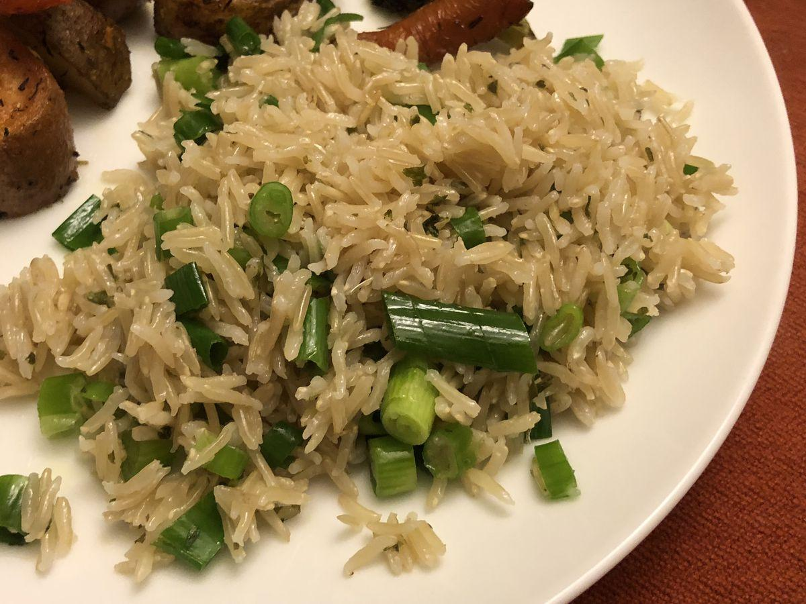

Inspired by https://www.allrecipes.com/recipe/259325/baked-salmon-with-lemony-orzo-and-basil-bacon-peas/
Personal rating: 1 / 5

Scaled to 1 cup of dry Basmati rice
1/2 tsp salt
1/2 tsp (or 1 tsp) Thyme, Basil, Parsely, etc.
1 Tbsp butter
1 tsp lemon juice
Rinse the Basmati rice with cold water until clear
Follow package directions (typically boil 2 cups water for every cup of rice)
Per 1 cup of dry rice, add 1/2 tsp salt, 1/2 tsp Thyme, and/or other herbs
Lower the temperature to simmer. Cover for 30-40 minutes until soft and all water has been absorbed
On medium-low, add 1 Tbsp of butter per cup of rice. Stir until fully melted and coated
Add 1 tsp of lemon juice, fluff with a fork or wooden spoon, and serve